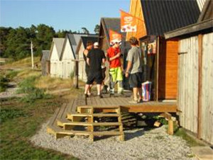
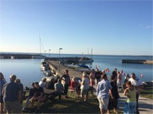

Hamnen och det gamla fiskeläget ligger med utsikt över både Lilla Karlsö och Stora Karlsö. Kuststräckan söder om Djupvik, den s.k. Ekstakusten, är otroligt vacker och inbjuder till härliga turer med bil, cykel eller till fots. Omedelbart norr om hamnen ligger en fin sandstrand som lämpar sig väl för bad. Från Djupviks hamn är det ca 2 nm ut till fågelön Lilla Karlsö. (http://lillakarlso.org/) och ca 4 nm till Stora Karlsö. (http://www.storakarlso.se/) 250 m ovanför hamnen och fiskeläget finns Djupviks hotell. De erbjuder mat, dryck och logi. (http://www.djupvikhotel.com/) Djupvik är något som måste upplevas!

